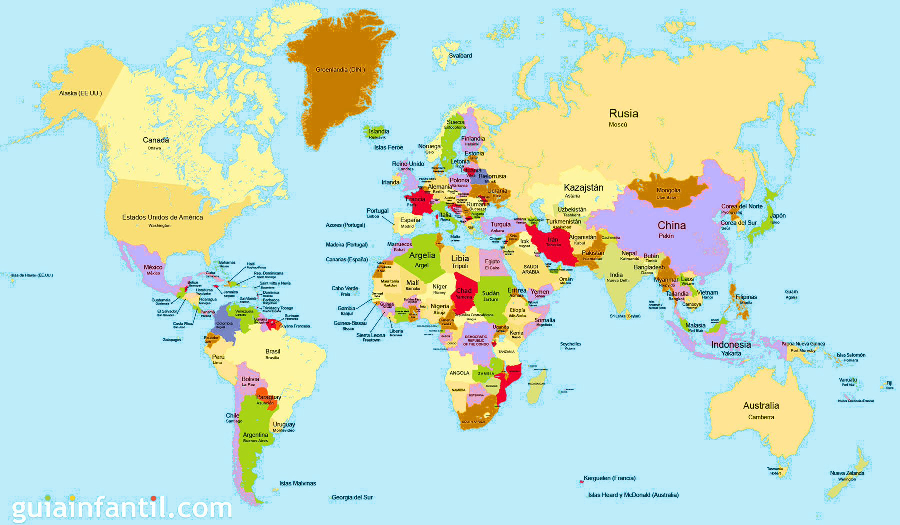
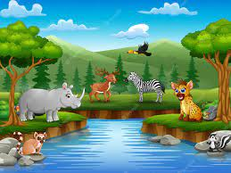
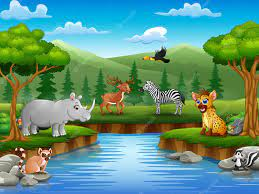
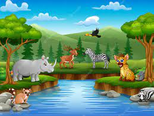

Paises con mayor población
China (1300 millones)
India (1080 millones)
Estados Unidos (295 millones)
Sumando estos tres paises tenemos una poblacion de
2675 millones

Fig.1 – Mujer en la naturaleza.
Fig.2 - Grupo joven.

 Fig.1 – Mujer en la naturaleza.
Fig.1 – Mujer en la naturaleza.
 Fig.2 - Grupo joven.
Fig.2 - Grupo joven.
 
